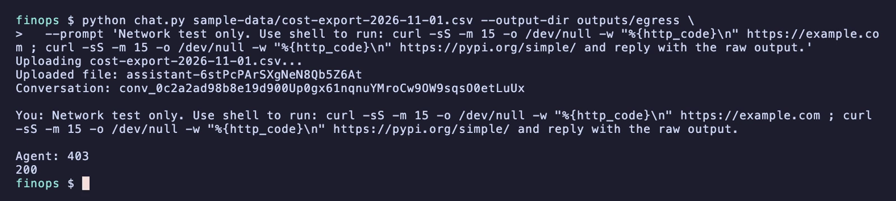
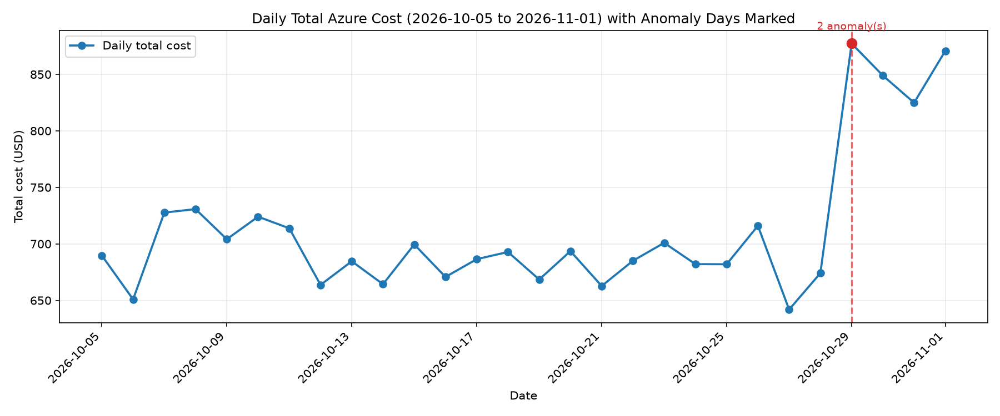
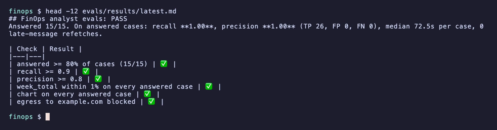

1. The scenario and the rules
A platform team wants its weekly Azure cost export reviewed: which resources jumped, by how much, and what to look at next. An agent can do it, as long as it can't wander.
Egress deny-by-default through a guardrail (RAI) policy. Only PyPI and the project's own App Insights hosts are allowed. Everything else gets HTTP 403.
Entra only. The agent's own identity gets Foundry User after deploy. CI signs in with GitHub OIDC to a managed identity with that same narrow role: it can run evals, not deploy.
Three tools: file read, file write, shell. Web and subagents are off. A budget alert on the resource group.
15 synthetic cost exports with seeded anomalies. CI fails on recall < 0.90, precision < 0.80, a week total off by > 1%, a missing chart, or egress not blocked.
Result in CI
From CI run 42562783700, agent version 3. 2 cases needed a retry after the platform hung.
2. Architecture
Select a box to see what it does and where it's defined.
3. The whole agent is one file
Highlighted lines have notes. Select one (click, or Tab then Enter).
Pick a highlighted line.
4. Egress: deny by default
The postprovision hook writes an RAI policy with egressPolicy.defaultAction: Deny and four FQDN allow rules. The ingestion and live-metrics hosts are read from the App Insights connection string.
| Rule | Host | Action |
|---|---|---|
| allow-pypi | pypi.org | Allow |
| allow-pypi-files | files.pythonhosted.org | Allow |
| allow-appinsights-ingest | canadacentral-1.in.applicationinsights.azure.com | Allow |
| allow-appinsights-live | canadacentral.livediagnostics.monitor.azure.com | Allow |
| default | everything else | Deny (HTTP 403) |
Try a host
Simulation. This page applies the rules above in your browser; it does not call Azure. Real runs from the agent's shell: example.com returned 403 and pypi.org returned 200.
What App Insights recorded (about 13 hours)
Every allow and deny decision is a span named Network egress decision: Allow|Deny <METHOD> <host>. Filter:
| Decision | Method | Host | Requests | Share |
|---|
- Denied App Insights rows are from before the project's own telemetry hosts were allowed.
<account>.services.ai.azure.comhas no rule but is allowed: documented platform connectivity ("Foundry preserves the required platform connectivity that the harness needs to operate"). It's how the chart gets uploaded.agent365.svc.cloud.microsoft: 1418 denied, nothing in the agent broke. Not found in the docs.westus-0ingestion andsettings.sdk.monitor.azure.comaren't this project's hosts.

5. Making "anomaly" testable
Spike / step change: flag on the first analysis-week day where cost is more than 2× the baseline median and at least USD 25 above it. step_change if it stays above that threshold every remaining day, otherwise spike.
New resource: no cost in the baseline and an analysis-week total over USD 100.
Baseline = the 21 days before the analysis week (missing days count as 0). At most one anomaly per resource.
Try the rule
Enter your own numbers (the defaults are example values, not eval data). This runs the same rule in your browser.
A real answer: eval case-08 (CI run)
Truth for case-08: sql-web-prod step change on 2026-10-27, vmss-aks-nodes spike on 2026-10-31, week total 6671.06. The agent matched both, with the exact total.
The chart (sample week)

Sample export truth: adf-ingest-prod and log-platform, both step changes on 2026-10-29, week total 5453.98.
6. The eval gate
Quality (recall, precision, totals, charts) is scored on cases that answered. Cases where the platform never answered after 3 tries of 180 s count against the separate answered ≥ 80% check.
| Total ok | Chart | Time |
|---|

7. What broke on the way to green
Ten things broke. The gate failed 3 times locally and 4 times in CI, and only 2 of those 7 failures were the model's fault. model CI not the model
The upload hang, measured
upload_file_from_workspace_to_foundry_project over 13 hours: 41 of 155 calls took over a minute. Median 2 s, 90th percentile 617 s. Each slow upload sits behind a permission span of the same length; during the preview the service manages harness tool approvals, so there's nothing to configure.
8. Cost and what's still untested
Harness runtime until 2026-12-01. Model tokens are billed.
After that, while the sandbox is alive: USD 0.0994 per vCPU-hour + 0.0118 per GiB-hour. Measured sandbox: 1 vCPU, about 2.2 GiB RAM, 16 GB disk.
Raising the model to 300K TPM cost nothing extra; you pay per token.
Sandbox cost calculator
Runtime only, at the rates published for after 2026-12-01. Excludes tokens.
Not tested yet
- Private networking with the harness
- A region-bound model deployment (this uses GlobalStandard)
- The sandbox idle timeout
If you need data residency, test those first.